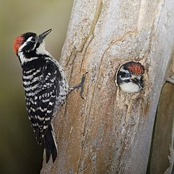
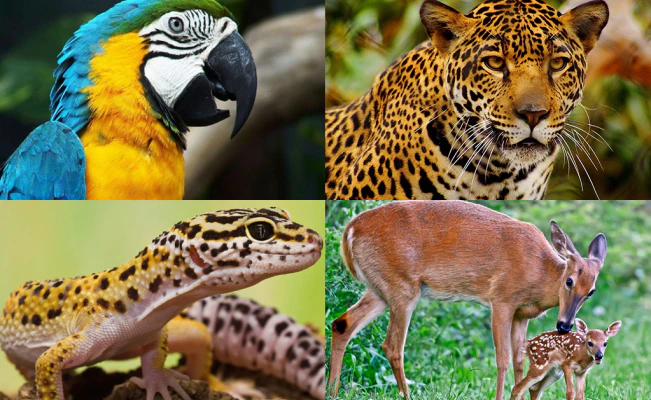

Pajaro carpintero: Los pájaros carpinteros son unas aves que forman parte de las Piciformes.
Pueden encontrarse en casi todas las latitudes del mundo excepto en las zonas de los polos, en Madagascar y en Australia.
Existen subespecies migratorias y otras sedentarias. Algunas de ellas están por mucho tiempo en los mismos territorios y
otras se mueven más, normalmente desde las zonas en que se reproducen hasta las zonas en las que hibernan.
Fauna: en Honduras existe una gran biodiversidad, la fauna en Honduras es riquísima y variada
siendo los más comunes los de vida arbórea y los que viven en las corrientes fluviales aguas lacustres.
Los animales grandes no son muy numerosos pero hay cientos de especies de reptiles, anfibios y pájaros;
lagartos y muchas variedades de peces en las corrientes. Monos, murciélagos y miríadas de pájaros abundan en los árboles.